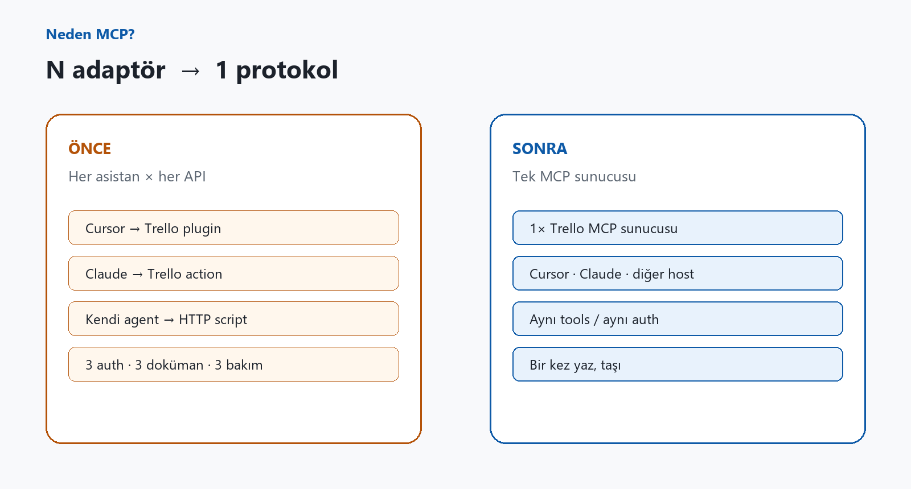
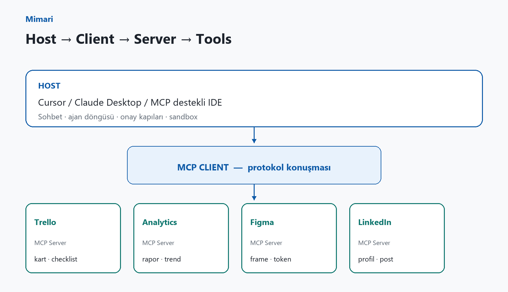
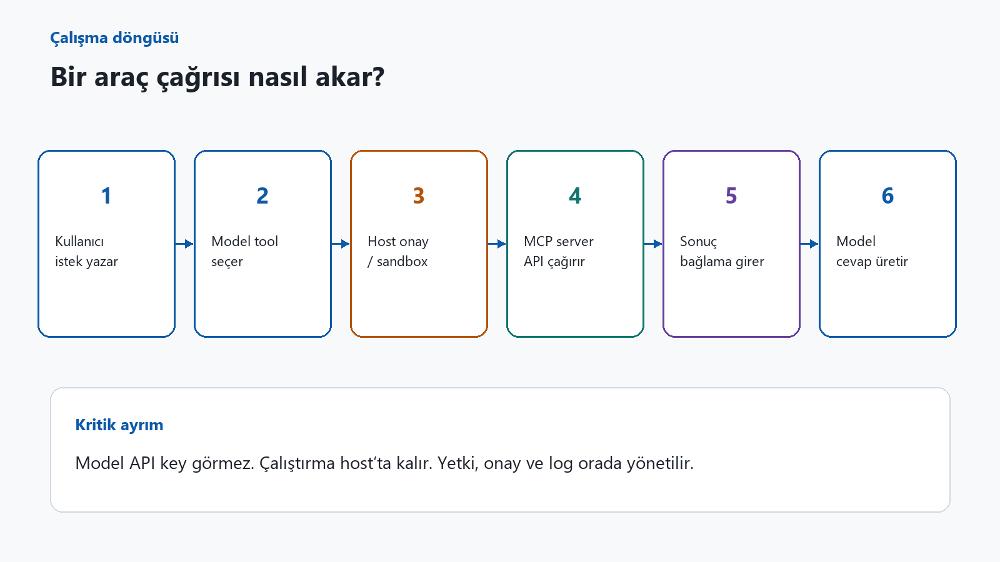
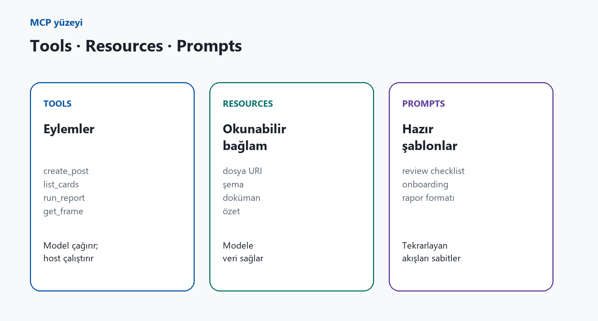
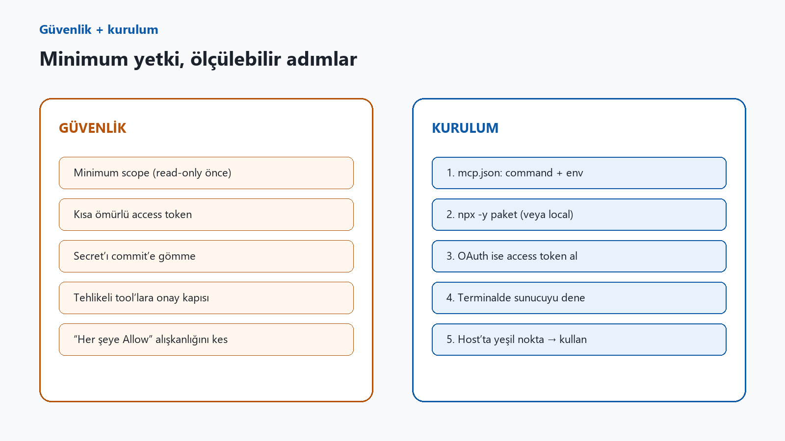

Bir süredir aynı sahneyi izliyorum.
Takımda biri Cursor açıyor, diğeri Claude, bir başkası kendi agent’ını deniyor. Hepsi aynı işi istiyor: “Trello’daki kartı güncelle”, “GA’dan geçen haftayı çek”, “bu Figma frame’ini oku”.
Sonuç? Üç farklı plugin, üç farklı auth hikâyesi, üç farklı “şu env’yi koyunca çalışır” dokümanı. Model iyi olsa bile entegrasyon tarafı dağınık kalıyor.
MCP tam olarak bu dağınıklığa müdahale ediyor.
MCP nedir?
MCP = Model Context Protocol.
Anthropic’in 2024 sonunda duyurduğu, kısa sürede Cursor, Claude Desktop ve bir sürü host’un benimsediği açık bir protokol. Özetle: model ile dış dünya arasında konuşma dili standart olsun.
USB-C benzetmesi abartılı değil. Host protokolü bir kez bilir; sen Trello, Analytics, Figma, LinkedIn… hangisini istiyorsan ona uyan sunucuyu bağlarsın.
Neden klasik plugin yetmiyordu?
Her ürün kendi dünya modelini dayatıyordu. Aynı Trello kartını güncellemek için üç kez aynı işi yazıyordunuz. MCP’de sunucuyu bir kez kuruyorsunuz; protokolü destekleyen host’ta taşıyorsunuz.

Host, Client, Server
- Host — Sohbet ve ajan döngüsü (Cursor, Claude…). Onay, sandbox, log burada.
- Client — Host içindeki MCP katmanı; tool listesini modele gösterir.
- Server — Dış sistemi araç olarak sunan süreç.
Kritik nokta: model API key’inizi doğrudan görmez. Çalıştırma host’ta kalır.

Bir araç çağrısı nasıl akar?
- Kullanıcı istek yazar
- Model tool seçer
- Host onay / sandbox
- MCP server API çağırır
- Sonuç bağlama girer
- Model cevap üretir

Tools, Resources, Prompts
- Tools — Eylemler (create_post, list_cards…)
- Resources — Okunabilir bağlam (dosya, şema)
- Prompts — Hazır şablonlar (review, rapor)

Ne işe yarar, ne yaramaz?
Yarar: yetkili, yapılandırılmış işler — board, rapor, post.
Yaramaz: public API’nin sunmadığı şeyler. MCP mucize icat etmez; var olanı modele açar.
Güvenlik ve kurulum
Minimum scope, kısa ömürlü token, secret’ı commit’e gömmemek, tehlikeli tool’lara onay kapısı. Cursor’da mcp.json + npx -y paket; OAuth’ta access token şart.

Kapanış
MCP’yi AI büyüü diye satmıyorum. Entegrasyon standardı — REST’in web servislerine yaptığına benzer bir sadeleştirme.
Model tartışması sürecek; ajanın gerçek iş yapması ise dış sistemlere nasıl bağlandığına bağlı. O bağın adı artık çoğu yerde MCP.
LinkedIn’e taşımak için
Metin: docs/linkedin-mcp-makale.md · Görseller: docs/mcp-assets/li-upload/*.jpg — kapaktan güvenlik diyagramına sırayla ekleyin.